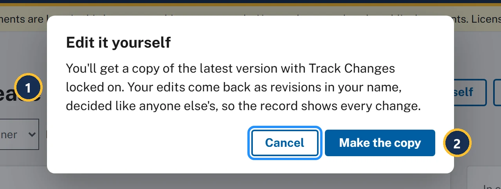
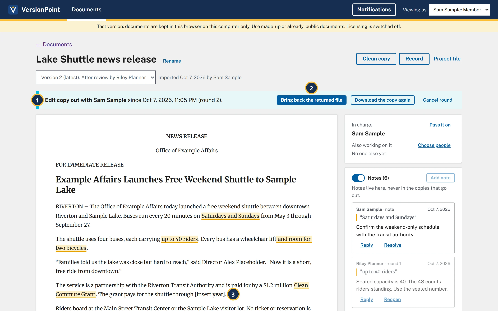
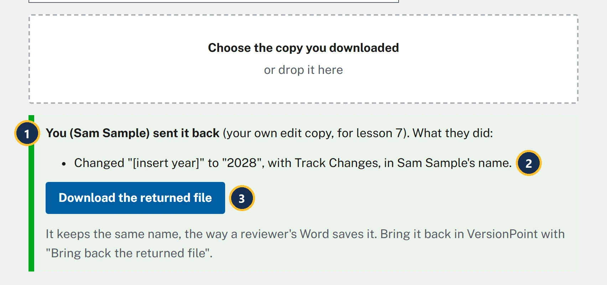
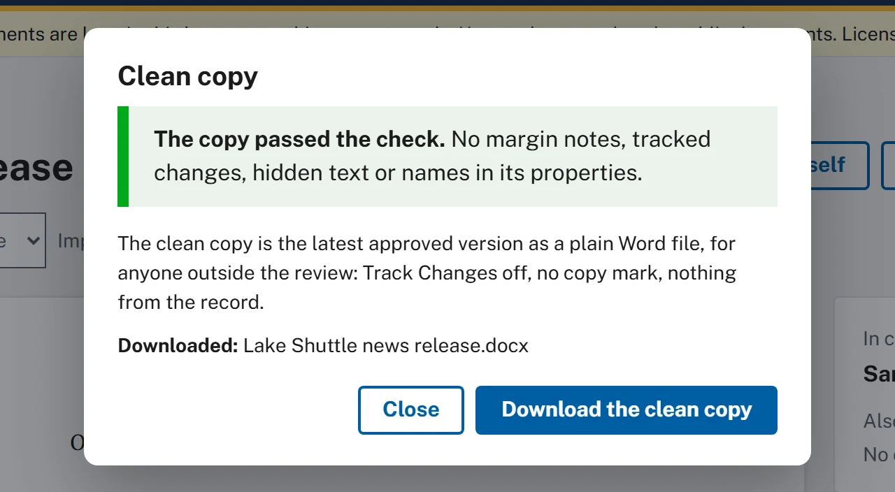

Lesson 78 minutesThe Lake Shuttle, version 2
Send a clean copy
Check the copy that leaves the office, fix what the check warns about with Edit it yourself, and download the clean copy.
Why it matters
The copy that leaves the office (to the press shop, a partner, the web team) has to carry the words and nothing else. VersionPoint checks every copy before you can download it, and warns about text that looks like a placeholder, like the [insert year] you let through in lesson 5.
Watch
![The Clean copy form on version 2. Callout 1 marks the green alert: The copy passed the check. No margin notes, tracked changes, hidden text or names in its properties. Callout 2 marks the yellow alert: Worth a look before it goes out: Paragraph 8 has "[insert year]". Is it meant to be there? Callout 3 marks the line: The clean copy is the latest approved version as a plain Word file, for anyone outside the review: Track Changes off, no copy mark, nothing from the record. Callout 4 marks the Download the clean copy button, which is still available, beside Close.](assets/l7-clean-warn-a.webp)
- The copy passed the check. Nothing hidden is in the file: no margin notes, tracked changes, hidden text or names in its properties.
- Worth a look before it goes out: text that looks like a placeholder. Paragraphs are counted from the top, so NEWS RELEASE is paragraph 1 and paragraph 8 is the grant paragraph.
- What the clean copy is: the latest approved version as a plain Word file, for anyone outside the review.
- Download the clean copy still works. A warning doesn't stop you, so it's your call.
Fix it with "Edit it yourself"
Don't fix the year in the downloaded clean copy: that change would never reach VersionPoint or the record. Make it the same way a reviewer would, as a round of your own.

- Your own edits come back as revisions in your name and are decided like anyone else's.
- Make the copy downloads Lake Shuttle news release - edit copy - round 2.docx.

- Edit copy out with Sam Sample: the round is open, in your name.
- Bring back the returned file is the same button as for a reviewer. Its form says Bring back the edit copy.
- The placeholder you're fixing, still in version 2.

- The desk knows an edit copy from its file name and plays you.
- It puts in 2028 with Track Changes, in Sam Sample's name, just as Word would with the locked copy.
- Download the returned file keeps the copy's name.
![The round page for Round 2: own edits by Sam Sample, sent from version 2, 0 of 1 decided. Callout 1 marks the heading Round 2: own edits by Sam Sample. Callout 2 marks the grant paragraph, where [insert year] is struck through as removed and 2028 is underlined as added, numbered 1. Callout 3 marks revision card 1, Changed: The grant pays for the shuttle through [insert year] changed to 2028, by Sam Sample, with Accept, Reject and the Why? box. Callout 4 marks the Finish button, greyed out.](assets/l7-round2-a.webp)
- Round 2: own edits by Sam Sample. The record will say who changed the year and when.
- In the text, [insert year] is struck through as removed and 2028 is underlined as added.
- One card: Changed, in your name, with Accept, Reject and Why? (optional, kept in the record).
- Finish is ready once the card is decided. It makes version 3, Own edits by Sam Sample.
Try it
Start on the document page of Lake Shuttle news release, version 2, where lesson 6 left you. In step 4 you can fill in the year in Word, or use the reviewer's desk to do it for you.
- The reviewer's desk: plays the reviewer on a copy you downloaded.
- Choose Clean copy. Read the check: it passes, and under Worth a look before it goes out: it asks whether [insert year] in paragraph 8 is meant to be there. Don't download this one.
- Choose Close, then Edit it yourself, then Make the copy. Lake Shuttle news release - edit copy - round 2.docx downloads, and the form says Make your changes in Word. Track Changes is already on and locked, so every edit is recorded. When you're done, bring the file back here.
- Choose Done. The banner says Edit copy out with Sam Sample, with today's date and round 2.
- Fill in the year. In Word: open the edit copy, replace [insert year] with 2028, and save. Or on the reviewer's desk: choose the edit copy, then choose Download the returned file.
- Back on the document page, choose Bring back the returned file, and in Bring back the edit copy choose your edited copy. Round 2: own edits by Sam Sample opens, with one card: [insert year] changed to 2028.
- Choose Accept on card 1, then Finish. The version list now says Version 3 (latest): Own edits by Sam Sample.
- Choose Clean copy again. It passes, and this time there's no Worth a look.
- Choose Download the clean copy. The form adds Downloaded: Lake Shuttle news release.docx. Choose Close.
Check your work

Watch out for
Quick check
Pick an answer to see why it is or isn't right. Nothing is scored or sent anywhere.
Question 1
The check passes, but under Worth a look before it goes out: it asks whether [insert year] in paragraph 8 is meant to be there. The release goes out in an hour. What do you do?
Question 2
A partner asks for the Word file with Riley's comments, so we can see the background. What do you send?
Question 3
Your director asks why you made a round just to change one word yourself. What's the reason?
Lesson 8 shows how any line of the release came to read the way it does.